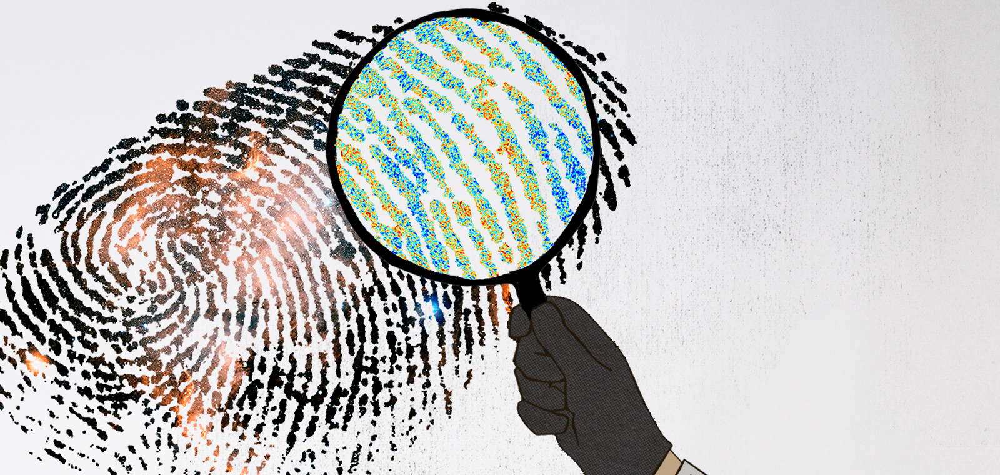

Sobre mim

Crédito: Sandbox Studio, Chicago
Olá!
Sou Gabriela Marques, pesquisadora de pós-doutorado no Fermi National Accelerator Laboratory (Fermilab) e pesquisadora associada no Kavli Institute of Cosmological Physics (KICP) da Universidade de Chicago.
Minha pesquisa consiste em usar dados da Radiação Cósmica de Fundo em Micro-ondas e da estrutura em Grande Escala para entender uma séries de perguntas fundamentais da Física e aprofundar nossa compreensão da evolução do Universo. Tenho grande interesse em desenvolver e implementar técnicas inovadoras para maximizar as informações que podemos extrair dessas observações.
Tenho doutorado e mestrado em Astronomia pelo Observatório Nacional no Brasil. Cresci no lindo estado da Bahia, Brasil, antes de me mudar para Brasília, onde obtive minha graduação em Física pela Universidade de Brasília. Antes de ingressar no Cosmic Physics Center no Fermilab, fui pós-doutoranda no Departamento de Física da Florida State University, onde trabalhei com o grupo do Dr. Kevin Huffenberger.
Para além da Cosmologia, sou genuinamente tocada pela beleza da natureza, do mundo e da humanidade. Tenho uma paixão (embora não necessariamente uma especialização!) por várias atividades, como escalada e tocar percussão brasileira.
Também gosto de incorporar as cores do meu bioma natal, o Cerrado, para fazer meus gráficos em Python. Você pode conferir mais aqui!
Pesquisa
 Pintura digital dos mapas da Radiação Cósmica de Fundo à esquerda e da Estrutura em Grande Escala do Universo à direita.
Pintura digital dos mapas da Radiação Cósmica de Fundo à esquerda e da Estrutura em Grande Escala do Universo à direita.
Minha pesquisa atual explora a intersecção entre teoria, dados observacionais e simulações cosmológicas. Meu foco específico dentro desse vasto tema é analisar observações da luz antiga do Fundo Cósmico de Micro-ondas (CMB) e da Estrutura em Larga Escala (LSS) do Universo para investigar questões fundamentais da física.
Tenho interesse particular em realizar análises de correlações cruzadas entre múltiplas sondas detectadas por diferentes levantamentos, com o objetivo central de restringir o crescimento das estruturas cósmicas ao longo do tempo e caracterizar potenciais efeitos sistemáticos nos dados astrofísicos.
Além disso, realizo análises de sinais não-Gaussianos em dados de distribuição de galáxias e de lenteamento gravitacional. Esses sinais contêm informações valiosas sobre o regime não linear, funcionando como um método complementar para aprofundar nossa compreensão do Universo.
Você pode encontrar maiores informações sobre meus estudos nesses tópicos na lista de publicações científicas abaixo.
PUBLICATIONS:
ADS : link
Orcid: 0000-0002-8571-8876
Publicações sobre estatísticas não-Gaussianas em dados de lenteamento gravitacional de Galáxias do Hyper Suprime-Cam (HSC): linktr
COLABORAÇÕES EM LEVANTAMENTOS COSMOLÓGICOS:
Meu trabalho atual está conectado a múltiplas levantamentos cosmológicos. Sou um membro ativo das seguintes colaborações:
Contato
Email: gmarques@fnal.gov
Outros
 Crédito: Claudio Elisabetsky (Photographer), Eduardo Costa (photography assistant). Capa do álbum Parabolicamará do Gilberto Gil.
Links utéis/legais/aleatórios:
Crédito: Claudio Elisabetsky (Photographer), Eduardo Costa (photography assistant). Capa do álbum Parabolicamará do Gilberto Gil.
Links utéis/legais/aleatórios: